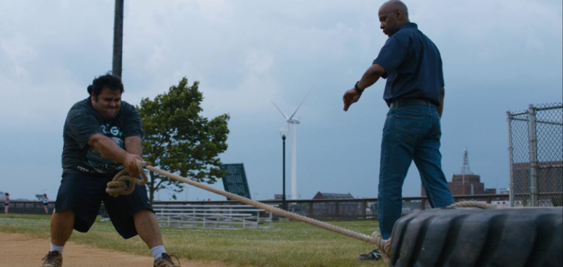
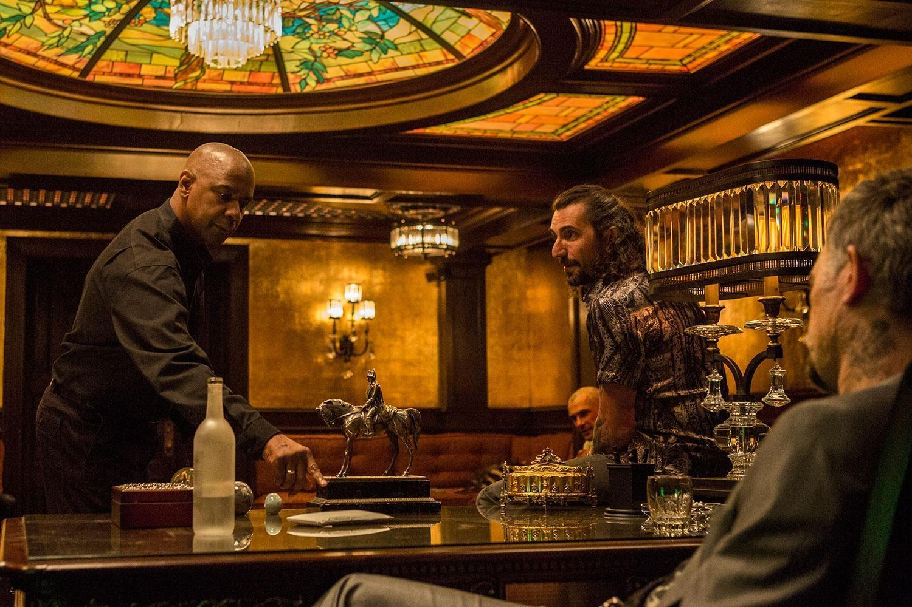
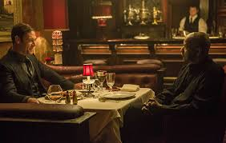

Sinopsis
Robert McCall, un hombre aparentemente común con un pasado misterioso. Él trabaja en una ferretería Home Mart, donde se hace amigo de sus compañeros y ayuda a una guardia aprendiz (Ralphie), entrenándolo, para pasar su examen de calificación.

Le había prometido a su esposa, recientemente fallecida, que dejaría su antigua vida de agente en el pasado, pero se ve obligado a romper dicha promesa para actuar después de ver que a una chica (Teri), cuyo verdadero nombre es Alina, es maltratada y hospitalizada por su proxeneta. Su vida se desmoronó a los cinco años al ser víctima de trata por la mafia rusa. McCall visita el restaurante propiedad de los rusos e intenta convencer al jefe (Slavi), en Boston, de que libere a Alina a cambio de un pago. Slavi se niega. McCall cambia de opinión, regresa y mata al jefe y a cuatro de sus hombres, eliminando las imágenes de seguridad.

En represalia, Vladimir Pushkin (Vladimir Kulich), líder de la organización en Moscú, envía a Teddy (Marton Csokas) a Boston para encontrar y eliminar al responsable. Ralphie abandona su solicitud como guardia de seguridad para ayudar a su madre, cuyo restaurante fue incendiado por policías corruptos. McCall los enfrenta y los obliga a devolver el dinero robado. Ralphie pasa la prueba y se convierte en guardia de seguridad.
Teddy descubre que McCall es el culpable. McCall escapa y visita a sus excompañeros Susan Plummer (Melissa Leo) y Brian Plummer (Bill Pullman) en Virginia. Ellos le proporcionan información sobre Pushkin. Susan le revela que Teddy es Nikolai Itchenko, un ex-Spetsnaz convertido en sicario. McCall captura a Frank Masters (David Harbour), un policía corrupto, y lo obliga a cooperar. Luego McCall confronta a Teddy en un restaurante. Pushkin le exige resultados. Teddy y sus hombres atacan Home Mart, toman rehenes y McCall los elimina uno por uno. Finalmente, viaja a Moscú y elimina a Pushkin.
Luego McCall confronta a Teddy en un restaurante. Pushkin le exige resultados. Teddy y sus hombres atacan Home Mart, toman rehenes y McCall los elimina uno por uno. Finalmente, viaja a Moscú y elimina a Pushkin.

Al regresar a Boston, se reencuentra con Alina, recuperada de sus heridas.